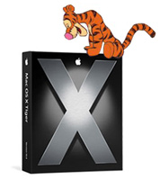

X-Day
vrijdag 29 april 2005 | Apple

Er hangt elektriciteit in de lucht. Vandaag wordt Tijge'tje losgelaten op de wereld.
Waar zit die TNT delivery boy; dat-t-ik 'em grrrrijpe!
Let the widgets come.
Nog een snelle tip voor de twijfelaars: koop een Mac mini voor een slordige 600 € en je krijgt er meteen Tiger en iLife bij.
Think different(ly). Of bent u nog niet overtuigd?
Erwin Heiser op 29 april 2005
LOL, dat ze dat niet op de Switch pagina van Apple zetten.
Free porn!